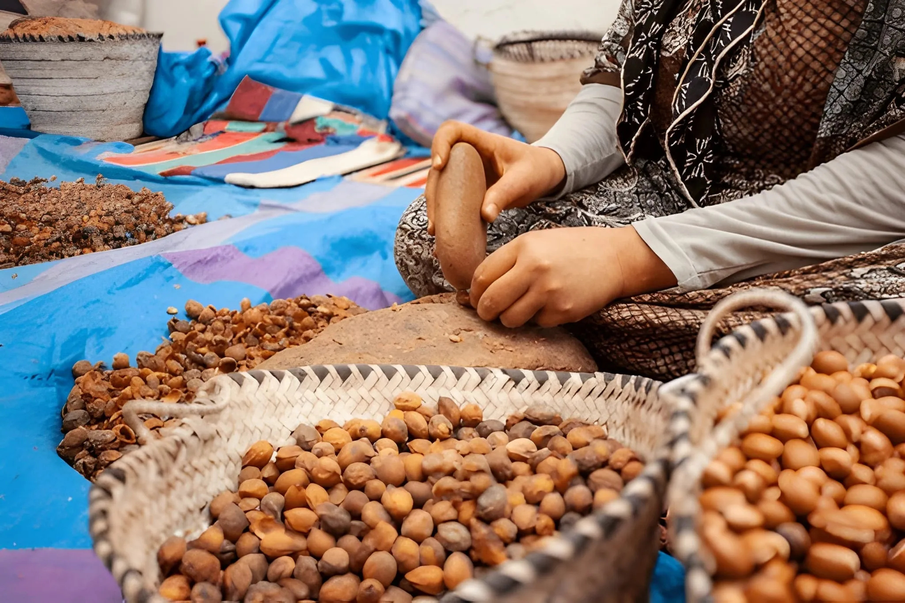

Walk the ancient ramparts encircling
the "Mini Marrakech" medina
Agadir Local Guide · Tour experience
A quieter inland day trip with old ramparts, local souks, and a more traditional feel than the bigger city excursions
the "Mini Marrakech" medina
artisan crafts and leather goods
cooperative and learn about "liquid gold"
traditional architecture
forests and Atlas foothills
local knowledge
Your Taroudant day trip from Agadir begins with a convenient hotel pickup and takes you through a carefully planned itinerary designed to maximize your experience of Morocco's charming "Mini Marrakech."
30 minutes

You leave Agadir in the morning with a simple hotel pickup and a shorter drive than the bigger city day trips.
45 minutes

A short argan cooperative stop breaks up the route and adds one practical local visit before Taroudant.
1 hour

The ramparts are usually the first main stop in town and give you a quick sense of Taroudant's older city layout.
1.5 hours

The souks are smaller and easier to handle than the larger city markets, which makes this part of the day feel calmer and more local.
1-1.5 hours

You get open time for lunch and a final walk, which keeps the day flexible instead of overly scheduled.
1.5 hours

The return to Agadir is straightforward and usually gets you back by late afternoon.
Real places.
Local people.
Unforgettable memories.

Our Agadir team can help you choose the right day, confirm the details and answer questions before you go.
Read recent feedback on our Google Business Profile.
Read Google reviewsUseful details before your taroudant day trip from agadir.
Comfortable walking shoes for exploring souks; Sunscreen, hat and sunglasses.
Tour is suitable for all ages and fitness levels; Moderate walking required in the medina.
Tour operates daily year-round; Pickup time: 8:00-8:30 AM from Agadir hotels.
Because it has the same warm-toned walls and old medina feel as Marrakech, but on a smaller and quieter scale.
Usually around 1.5 hours each way from Agadir, depending on pickup and road conditions.
Yes, especially for families who want a gentler cultural day trip without a very long road journey.
Leather goods, local crafts, argan products, and everyday market items are the main things people look for.
No. Lunch is usually left open so you can choose a place that suits your budget and timing.
Free cancellation is available up to 24 hours before departure.
Taroudant works well for travelers who want a smaller, easier city trip from Agadir. It feels more local, less crowded, and easier to take in than Marrakech.
The day is built around a manageable drive, a few guided stops, and time in the souks. If you want a cultural outing without a very long transfer, this is one of the better options.
What to Bring: Comfortable walking shoes for exploring souks; Sunscreen, hat and sunglasses; Camera or smartphone for photos; Cash for shopping and lunch; Light layers (temperatures vary); Water bottle.
Health & Safety: Tour is suitable for all ages and fitness levels; Moderate walking required in the medina; Stay with your guide in busy market areas; Be aware of your belongings in crowded souks; Drink plenty of water throughout the day; Wheelchair access limited in traditional medina.
Important Note: Tour operates daily year-round; Pickup time: 8:00-8:30 AM from Agadir hotels; Tour duration: approximately 6-7 hours; Modest dress recommended for cultural sites; Small group sizes (max 15 people); Free cancellation up to 24 hours before tour.
Your Agadir day starts here
Choose your date and we’ll confirm the details with you directly.